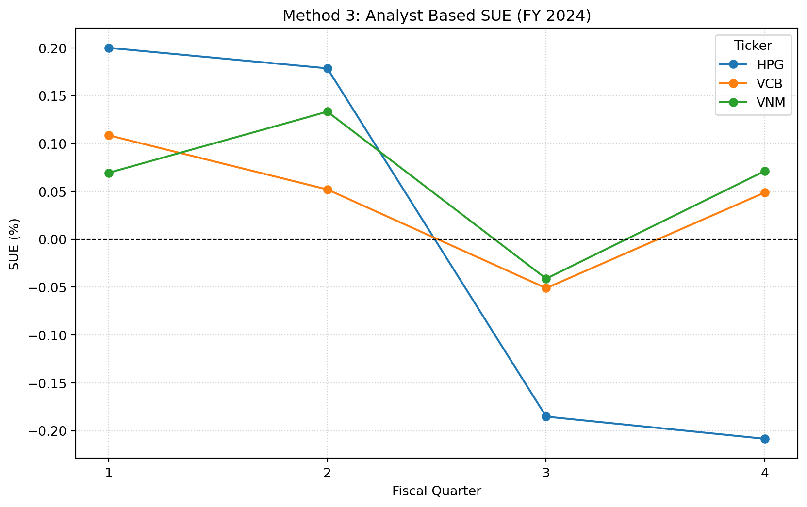

Trên Sở Giao dịch Chứng khoán Thành phố Hồ Chí Minh (HOSE) và Sở Giao dịch Chứng khoán Hà Nội (HNX), các thông báo lợi nhuận là những sự kiện thông tin quan trọng. Nhà đầu tư và các nhà phân tích định lượng liên tục theo dõi độ lệch giữa lợi nhuận kế toán được báo cáo và kỳ vọng của thị trường. Độ lệch này được đo lường bằng bất ngờ lợi nhuận chuẩn hóa (Standardized Earnings Surprise, SUE).
Chương này trình bày chi tiết phương pháp tính SUE theo ba cách tiếp cận khác nhau, thường được sử dụng trong các nghiên cứu học thuật và nghiên cứu của các tổ chức. Chúng ta áp dụng các phương pháp này cho một bộ dữ liệu gồm các cổ phiếu vốn hóa lớn của Việt Nam để minh họa cơ chế tính toán. Mục tiêu là tách riêng thành phần “bất ngờ” của lợi nhuận, vốn là một yếu tố dự báo đã được biết đến của hiện tượng trôi dạt sau thông báo lợi nhuận (PEAD) (Bernard và Thomas 1989; Livnat và Mendenhall 2006).
31.1 Phương pháp luận
Chúng ta định nghĩa ba phương pháp chính để tính SUE. Mỗi phương pháp khác nhau ở cách xác lập giá trị lợi nhuận “kỳ vọng”.
31.1.1 Phương pháp 1: Bước ngẫu nhiên theo mùa vụ
Phương pháp này giả định lợi nhuận tuân theo một quy luật mùa vụ. Yếu tố dự báo tốt nhất cho lợi nhuận trên mỗi cổ phiếu (EPS) của quý hiện tại là EPS của cùng quý trong năm trước. Cách làm này kiểm soát tính mùa vụ thường thấy ở các ngành của Việt Nam như bán lẻ và nông nghiệp.
\[SUE_{1} = \frac{EPS_{t} - EPS_{t-4}}{P_{t}}\]
Trong đó:
\(EPS_{t}\) là lợi nhuận trên mỗi cổ phiếu của quý hiện tại.
\(EPS_{t-4}\) là lợi nhuận trên mỗi cổ phiếu của cùng quý trong năm tài chính trước.
\(P_{t}\) là giá cổ phiếu vào cuối quý (được dùng làm mẫu số chuẩn hóa).
31.1.2 Phương pháp 2: Loại trừ các khoản mục đặc biệt
Lợi nhuận được báo cáo thường chứa các khoản mục không thường xuyên (ví dụ: bán tài sản, xóa sổ một lần) làm sai lệch hiệu quả hoạt động thực sự. Phương pháp này điều chỉnh EPS được báo cáo bằng cách loại bỏ tác động sau thuế của các khoản mục đặc biệt.
Tại Việt Nam, thuế suất thuế thu nhập doanh nghiệp (CIT) tiêu chuẩn nhìn chung là 20%. Chúng ta điều chỉnh các khoản mục đặc biệt để phản ánh tác động của chúng lên lợi nhuận ròng.
Khi đó, cách tính SUE tuân theo logic mùa vụ nhưng sử dụng các số liệu EPS đã điều chỉnh: \[SUE_{2} = \frac{Adj \ EPS_{t} - Adj \ EPS_{t-4}}{P_{t}}\]
31.1.3 Phương pháp 3: Đồng thuận của các nhà phân tích
Phương pháp này dựa vào đồng thuận của thị trường thay vì chuỗi thời gian lịch sử. Phương pháp so sánh lợi nhuận thực tế được báo cáo với dự báo trung vị của các nhà phân tích được công bố trước thông báo.
\[SUE_{3} = \frac{Actual \ EPS - Median \ Estimate}{P_{t}}\]
31.2 Mô tả dữ liệu
Trong phân tích này, chúng ta sử dụng một bộ dữ liệu bao phủ các năm tài chính từ 2023 đến 2025. Dữ liệu gồm báo cáo tài chính hằng quý và ước tính đồng thuận của các nhà phân tích đối với một số cổ phiếu thành phần của chỉ số VN30.
Bộ dữ liệu vietnam_fin_data.csv gồm các cột sau:
ticker: Mã cổ phiếu (ví dụ: VNM, VCB, HPG).
fiscal_year: Năm tài chính.
fiscal_qtr: Quý tài chính (1-4).
eps_basic: Lợi nhuận cơ bản trên mỗi cổ phiếu (VND).
price_close: Giá đóng cửa vào cuối quý (VND).
special_items: Giá trị các khoản mục đặc biệt trước thuế (triệu VND). (tức là is_other_profit trong DataCore).
shares_out: Số cổ phiếu đang lưu hành (triệu).
analyst_med: Ước tính EPS trung vị của các nhà phân tích (VND).
31.2.1 Trực quan hóa dữ liệu cốt lõi
Dưới đây là bảng biểu diễn dữ liệu thô mà chúng ta đã nạp cho phân tích.
ticker (mã CP)
fiscal_year (năm TC)
fiscal_qtr (quý TC)
eps_basic (EPS cơ bản)
price_close (giá đóng cửa)
special_items (khoản mục đặc biệt)
shares_out (số CP lưu hành)
analyst_med (trung vị nhà phân tích)
VNM
2023
1
1200
68000
0
2090
1150
VNM
2023
2
1350
71000
50000
2090
1300
VNM
2023
3
1400
74000
0
2090
1450
VNM
2023
4
1100
69000
-20000
2090
1150
VNM
2024
1
1300
72000
0
2090
1250
VNM
2024
2
1500
75000
0
2090
1400
VCB
2023
1
1800
85000
10000
5500
1700
VCB
2024
1
2100
92000
0
5500
2000
31.3 Triển khai
31.3.1 Thiết lập Python và nạp dữ liệu
Trước tiên, chúng ta thiết lập môi trường và nạp bộ dữ liệu. Chúng ta đảm bảo dữ liệu được sắp xếp theo mã cổ phiếu và thời gian để tính độ trễ một cách chính xác.
Bây giờ chúng ta áp dụng các hàm để tính ba biến thể của SUE.
Bước 1: Xử lý tính mùa vụ (độ trễ)
Với Phương pháp 1 và 2, chúng ta cần dữ liệu của cùng quý năm trước (độ trễ 4).
# Group by ticker to ensure we don't shift data between companiesdf['eps_lag4'] = df.groupby('ticker')['eps_basic'].shift(4)
Bước 2: Điều chỉnh các khoản mục đặc biệt
Với Phương pháp 2, chúng ta phải loại bỏ các khoản mục không thường xuyên. Chúng ta áp dụng thuế suất thuế thu nhập doanh nghiệp (CIT) của Việt Nam là 20%.
Công thức điều chỉnh trên mỗi cổ phiếu là: \[ \text{Adjustment} = \frac{\text{Special Items} \times (1 - 0.20)}{\text{Shares Outstanding}} \]
# ConstantsCIT_RATE_VN =0.20# Calculate impact per share# Note: special_items are in millions, shares_out are in millions# The units cancel out, leaving the result in VND per share.df['spi_impact_per_share'] = (df['special_items'] * (1- CIT_RATE_VN)) / df['shares_out']# Calculate Adjusted EPSdf['eps_adjusted'] = df['eps_basic'] - df['spi_impact_per_share']# Create lag for Adjusted EPSdf['eps_adj_lag4'] = df.groupby('ticker')['eps_adjusted'].shift(4)
Bước 3: Tính các biến thể của SUE
Chúng ta hoàn tất phép tính bằng cách lấy chênh lệch giữa giá trị thực tế (hoặc đã điều chỉnh) và giá trị kỳ vọng, chia cho giá cổ phiếu.
# Method 1: Seasonal Random Walk (Standard EPS)df['sue_1'] = (df['eps_basic'] - df['eps_lag4']) / df['price_close']# Method 2: Seasonal Random Walk (Excluding Special Items)df['sue_2'] = (df['eps_adjusted'] - df['eps_adj_lag4']) / df['price_close']# Method 3: Analyst Forecasts (IBES Equivalent)df['sue_3'] = (df['eps_basic'] - df['analyst_med']) / df['price_close']# Scaling for readability (converting to percentage)df['sue_1_pct'] = df['sue_1'] *100df['sue_2_pct'] = df['sue_2'] *100df['sue_3_pct'] = df['sue_3'] *100
31.4 Kết quả và phân tích
Chúng ta trình bày bất ngờ lợi nhuận chuẩn hóa đã tính cho năm tài chính 2024. Giá trị dương cho thấy một bất ngờ tích cực (vượt kỳ vọng), còn giá trị âm cho thấy kết quả không đạt kỳ vọng.
31.4.1 Kết quả dạng bảng (năm tài chính 2024)
# Filter for 2024 results where lag data existsresults_2024 = df[df['fiscal_year'] ==2024][['ticker', 'fiscal_qtr', 'sue_1_pct', 'sue_2_pct', 'sue_3_pct']]# Display formatted tablefrom IPython.display import display, Markdownmarkdown_table = results_2024.to_markdown(index=False, floatfmt=".4f")display(Markdown(markdown_table))
ticker
fiscal_qtr
sue_1_pct
sue_2_pct
sue_3_pct
HPG
1
0.8000
0.7449
0.2000
HPG
2
0.7143
0.7143
0.1786
HPG
3
0.7407
0.7152
-0.1852
HPG
4
0.8333
0.8333
-0.2083
VCB
1
0.3261
0.3276
0.1087
VCB
2
0.4167
0.4137
0.0521
VCB
3
0.4082
0.4082
-0.0510
VCB
4
0.3922
0.3992
0.0490
VNM
1
0.1389
0.1389
0.0694
VNM
2
0.2000
0.2255
0.1333
VNM
3
0.0685
0.0632
-0.0411
VNM
4
0.2143
0.2033
0.0714
31.4.2 Trực quan hóa
Hình sau vẽ SUE dựa trên dự báo của nhà phân tích (Phương pháp 3) cho các mã cổ phiếu được chọn trong năm tài chính 2024.
pivot_sue = results_2024.pivot(index='fiscal_qtr', columns='ticker', values='sue_3_pct')plt.figure(figsize=(10, 6))for column in pivot_sue.columns: plt.plot(pivot_sue.index, pivot_sue[column], marker='o', label=column)plt.title('Method 3: Analyst Based SUE (FY 2024)')plt.xlabel('Fiscal Quarter')plt.ylabel('SUE (%)')plt.axhline(0, color='black', linestyle='--', linewidth=0.8)plt.legend(title='Ticker')plt.grid(True, linestyle=':', alpha=0.6)plt.xticks([1, 2, 3, 4])plt.show()

Hình 31.1
31.5 Kết luận
Trong chương này, chúng ta đã chính thức hóa cách tính bất ngờ lợi nhuận chuẩn hóa cho thị trường Việt Nam. Chúng ta đã chỉ ra rằng chỉ dựa vào tăng trưởng EPS thô (Phương pháp 1) có thể gây hiểu lầm khi có các khoản mục không thường xuyên. Hơn nữa, các bất ngờ dựa trên nhà phân tích (Phương pháp 3) thường cung cấp tín hiệu rõ ràng hơn về thông tin mới đi vào thị trường.
Để xây dựng mô hình định lượng vững chắc tại Việt Nam, chúng tôi khuyến nghị dùng Phương pháp 2 khi dữ liệu nhà phân tích thưa thớt (phổ biến ở các cổ phiếu vốn hóa nhỏ) và Phương pháp 3 cho các cổ phiếu thành phần VN30, nơi mức độ phủ sóng của nhà phân tích sâu và thanh khoản cao.
Bernard, Victor L, và Jacob K Thomas. 1989. “Post-earnings-announcement drift: delayed price response or risk premium?”Journal of Accounting research 27: 1–36. https://doi.org/10.2307/2491062.
Livnat, Joshua, và Richard R Mendenhall. 2006. “Comparing the post–earnings announcement drift for surprises calculated from analyst and time series forecasts”. Journal of accounting research 44 (1): 177–205.
Mã nguồn
# Bất ngờ lợi nhuận chuẩn hóa (SUE)Trên Sở Giao dịch Chứng khoán Thành phố Hồ Chí Minh (HOSE) và Sở Giao dịch Chứng khoán Hà Nội (HNX), các thông báo lợi nhuận là những sự kiện thông tin quan trọng. Nhà đầu tư và các nhà phân tích định lượng liên tục theo dõi độ lệch giữa lợi nhuận kế toán được báo cáo và kỳ vọng của thị trường. Độ lệch này được đo lường bằng bất ngờ lợi nhuận chuẩn hóa (Standardized Earnings Surprise, SUE).Chương này trình bày chi tiết phương pháp tính SUE theo ba cách tiếp cận khác nhau, thường được sử dụng trong các nghiên cứu học thuật và nghiên cứu của các tổ chức. Chúng ta áp dụng các phương pháp này cho một bộ dữ liệu gồm các cổ phiếu vốn hóa lớn của Việt Nam để minh họa cơ chế tính toán. Mục tiêu là tách riêng thành phần "bất ngờ" của lợi nhuận, vốn là một yếu tố dự báo đã được biết đến của hiện tượng trôi dạt sau thông báo lợi nhuận (PEAD) [@bernard1989post; @livnat2006comparing].## Phương pháp luậnChúng ta định nghĩa ba phương pháp chính để tính SUE. Mỗi phương pháp khác nhau ở cách xác lập giá trị lợi nhuận "kỳ vọng".### Phương pháp 1: Bước ngẫu nhiên theo mùa vụPhương pháp này giả định lợi nhuận tuân theo một quy luật mùa vụ. Yếu tố dự báo tốt nhất cho lợi nhuận trên mỗi cổ phiếu (EPS) của quý hiện tại là EPS của cùng quý trong năm trước. Cách làm này kiểm soát tính mùa vụ thường thấy ở các ngành của Việt Nam như bán lẻ và nông nghiệp.$$SUE_{1} = \frac{EPS_{t} - EPS_{t-4}}{P_{t}}$$Trong đó:- $EPS_{t}$ là lợi nhuận trên mỗi cổ phiếu của quý hiện tại.- $EPS_{t-4}$ là lợi nhuận trên mỗi cổ phiếu của cùng quý trong năm tài chính trước.- $P_{t}$ là giá cổ phiếu vào cuối quý (được dùng làm mẫu số chuẩn hóa).### Phương pháp 2: Loại trừ các khoản mục đặc biệtLợi nhuận được báo cáo thường chứa các khoản mục không thường xuyên (ví dụ: bán tài sản, xóa sổ một lần) làm sai lệch hiệu quả hoạt động thực sự. Phương pháp này điều chỉnh EPS được báo cáo bằng cách loại bỏ tác động sau thuế của các khoản mục đặc biệt.Tại Việt Nam, thuế suất thuế thu nhập doanh nghiệp (CIT) tiêu chuẩn nhìn chung là 20%. Chúng ta điều chỉnh các khoản mục đặc biệt để phản ánh tác động của chúng lên lợi nhuận ròng.$$Adjusted \ EPS = Reported \ EPS - \frac{Special \ Items \times (1 - CIT)}{Shares \ Outstanding}$$Khi đó, cách tính SUE tuân theo logic mùa vụ nhưng sử dụng các số liệu EPS đã điều chỉnh: $$SUE_{2} = \frac{Adj \ EPS_{t} - Adj \ EPS_{t-4}}{P_{t}}$$### Phương pháp 3: Đồng thuận của các nhà phân tíchPhương pháp này dựa vào đồng thuận của thị trường thay vì chuỗi thời gian lịch sử. Phương pháp so sánh lợi nhuận thực tế được báo cáo với dự báo trung vị của các nhà phân tích được công bố trước thông báo.$$SUE_{3} = \frac{Actual \ EPS - Median \ Estimate}{P_{t}}$$## Mô tả dữ liệuTrong phân tích này, chúng ta sử dụng một bộ dữ liệu bao phủ các năm tài chính từ 2023 đến 2025. Dữ liệu gồm báo cáo tài chính hằng quý và ước tính đồng thuận của các nhà phân tích đối với một số cổ phiếu thành phần của chỉ số VN30.Bộ dữ liệu `vietnam_fin_data.csv` gồm các cột sau:- **ticker**: Mã cổ phiếu (ví dụ: VNM, VCB, HPG).- **fiscal_year**: Năm tài chính.- **fiscal_qtr**: Quý tài chính (1-4).- **eps_basic**: Lợi nhuận cơ bản trên mỗi cổ phiếu (VND).- **price_close**: Giá đóng cửa vào cuối quý (VND).- **special_items**: Giá trị các khoản mục đặc biệt trước thuế (triệu VND). (tức là `is_other_profit` trong DataCore).- **shares_out**: Số cổ phiếu đang lưu hành (triệu).- **analyst_med**: Ước tính EPS trung vị của các nhà phân tích (VND).### Trực quan hóa dữ liệu cốt lõiDưới đây là bảng biểu diễn dữ liệu thô mà chúng ta đã nạp cho phân tích.| ticker (mã CP) | fiscal_year (năm TC) | fiscal_qtr (quý TC) | eps_basic (EPS cơ bản) | price_close (giá đóng cửa) | special_items (khoản mục đặc biệt) | shares_out (số CP lưu hành) | analyst_med (trung vị nhà phân tích) ||:--------|:--------|:--------|:--------|:--------|:--------|:--------|:--------|| VNM | 2023 | 1 | 1200 | 68000 | 0 | 2090 | 1150 || VNM | 2023 | 2 | 1350 | 71000 | 50000 | 2090 | 1300 || VNM | 2023 | 3 | 1400 | 74000 | 0 | 2090 | 1450 || VNM | 2023 | 4 | 1100 | 69000 | -20000 | 2090 | 1150 || VNM | 2024 | 1 | 1300 | 72000 | 0 | 2090 | 1250 || VNM | 2024 | 2 | 1500 | 75000 | 0 | 2090 | 1400 || VCB | 2023 | 1 | 1800 | 85000 | 10000 | 5500 | 1700 || VCB | 2024 | 1 | 2100 | 92000 | 0 | 5500 | 2000 |## Triển khai### Thiết lập Python và nạp dữ liệuTrước tiên, chúng ta thiết lập môi trường và nạp bộ dữ liệu. Chúng ta đảm bảo dữ liệu được sắp xếp theo mã cổ phiếu và thời gian để tính độ trễ một cách chính xác.```{python}import pandas as pdimport numpy as npimport matplotlib.pyplot as plt# Creating the dataset directly for this chapter's demonstrationdata = {'ticker': ['VNM']*8+ ['VCB']*8+ ['HPG']*8,'fiscal_year': [2023, 2023, 2023, 2023, 2024, 2024, 2024, 2024] *3,'fiscal_qtr': [1, 2, 3, 4, 1, 2, 3, 4] *3,'eps_basic': [1200, 1350, 1400, 1100, 1300, 1500, 1450, 1250, # VNM1800, 1900, 2000, 2200, 2100, 2300, 2400, 2600, # VCB500, 600, 550, 400, 700, 800, 750, 600# HPG ],'price_close': [68000, 71000, 74000, 69000, 72000, 75000, 73000, 70000, # VNM85000, 88000, 90000, 95000, 92000, 96000, 98000, 102000, # VCB20000, 22000, 21000, 19000, 25000, 28000, 27000, 24000# HPG ],'special_items': [0, 50000, 0, -20000, 0, 0, 10000, 0, # VNM (VND Millions)10000, 0, 0, 50000, 0, 20000, 0, 0, # VCB0, 0, -50000, 0, 100000, 0, 0, 0# HPG ],'shares_out': [2090]*8+ [5580]*8+ [5810]*8, # In Millions'analyst_med': [1150, 1300, 1450, 1150, 1250, 1400, 1480, 1200, # VNM1700, 1850, 1950, 2150, 2000, 2250, 2450, 2550, # VCB450, 550, 600, 450, 650, 750, 800, 650# HPG ]}df = pd.DataFrame(data)# Sort strictly to ensure shift operations work on correct temporal sequencedf = df.sort_values(by=['ticker', 'fiscal_year', 'fiscal_qtr'])print(df.head())```### Logic tính toánBây giờ chúng ta áp dụng các hàm để tính ba biến thể của SUE.**Bước 1: Xử lý tính mùa vụ (độ trễ)**Với Phương pháp 1 và 2, chúng ta cần dữ liệu của cùng quý năm trước (độ trễ 4).```{python}# Group by ticker to ensure we don't shift data between companiesdf['eps_lag4'] = df.groupby('ticker')['eps_basic'].shift(4)```**Bước 2: Điều chỉnh các khoản mục đặc biệt**Với Phương pháp 2, chúng ta phải loại bỏ các khoản mục không thường xuyên. Chúng ta áp dụng thuế suất thuế thu nhập doanh nghiệp (CIT) của Việt Nam là 20%.Công thức điều chỉnh trên mỗi cổ phiếu là: $$ \text{Adjustment} = \frac{\text{Special Items} \times (1 - 0.20)}{\text{Shares Outstanding}} $$```{python}# ConstantsCIT_RATE_VN =0.20# Calculate impact per share# Note: special_items are in millions, shares_out are in millions# The units cancel out, leaving the result in VND per share.df['spi_impact_per_share'] = (df['special_items'] * (1- CIT_RATE_VN)) / df['shares_out']# Calculate Adjusted EPSdf['eps_adjusted'] = df['eps_basic'] - df['spi_impact_per_share']# Create lag for Adjusted EPSdf['eps_adj_lag4'] = df.groupby('ticker')['eps_adjusted'].shift(4)```**Bước 3: Tính các biến thể của SUE**Chúng ta hoàn tất phép tính bằng cách lấy chênh lệch giữa giá trị thực tế (hoặc đã điều chỉnh) và giá trị kỳ vọng, chia cho giá cổ phiếu.```{python}# Method 1: Seasonal Random Walk (Standard EPS)df['sue_1'] = (df['eps_basic'] - df['eps_lag4']) / df['price_close']# Method 2: Seasonal Random Walk (Excluding Special Items)df['sue_2'] = (df['eps_adjusted'] - df['eps_adj_lag4']) / df['price_close']# Method 3: Analyst Forecasts (IBES Equivalent)df['sue_3'] = (df['eps_basic'] - df['analyst_med']) / df['price_close']# Scaling for readability (converting to percentage)df['sue_1_pct'] = df['sue_1'] *100df['sue_2_pct'] = df['sue_2'] *100df['sue_3_pct'] = df['sue_3'] *100```## Kết quả và phân tíchChúng ta trình bày bất ngờ lợi nhuận chuẩn hóa đã tính cho năm tài chính 2024. Giá trị dương cho thấy một bất ngờ tích cực (vượt kỳ vọng), còn giá trị âm cho thấy kết quả không đạt kỳ vọng.### Kết quả dạng bảng (năm tài chính 2024)```{python}# Filter for 2024 results where lag data existsresults_2024 = df[df['fiscal_year'] ==2024][['ticker', 'fiscal_qtr', 'sue_1_pct', 'sue_2_pct', 'sue_3_pct']]# Display formatted tablefrom IPython.display import display, Markdownmarkdown_table = results_2024.to_markdown(index=False, floatfmt=".4f")display(Markdown(markdown_table))``````{=html}<!-- | ticker | fiscal_qtr | sue_1_pct | sue_2_pct | sue_3_pct ||--------|------------|-----------|-----------|-----------|| HPG | 1 | 0.8000 | 0.7449 | 0.2000 || HPG | 2 | 0.7143 | 0.7143 | 0.1786 || HPG | 3 | 0.7407 | 0.8148 | -0.1852 || HPG | 4 | 0.8333 | 0.8333 | -0.2083 || VCB | 1 | 0.3261 | 0.3276 | 0.1087 || VCB | 2 | 0.4167 | 0.4167 | 0.0521 || VCB | 3 | 0.4082 | 0.4082 | -0.0510 || VCB | 4 | 0.3922 | 0.3453 | 0.0490 || VNM | 1 | 0.1389 | 0.1389 | 0.0694 || VNM | 2 | 0.2000 | 0.2255 | 0.1333 || VNM | 3 | 0.0685 | 0.0685 | -0.0411 || VNM | 4 | 0.2143 | 0.1914 | 0.0714 | -->``````{=html}<!-- The analysis of the VNM (Vinamilk), VCB (Vietcombank), and HPG (Hoa Phat Group) data reveals distinct divergences between the three methods.1. **Analyst Efficiency (Method 3):** Note that SUE 3 is generally smaller in magnitude than SUE 1 or 2. This is expected, as analysts incorporate recent information into their forecasts, making the "surprise" smaller than a simple seasonal model would suggest.2. **Impact of Special Items (Method 2 vs 1):** In the case of HPG in Q1 2024, there was a significant special item adjustment. SUE 1 (0.8000%) differs from SUE 2 (0.7449%), showing that the raw EPS growth was partially driven by one-off events. Using Method 1 alone would have overstated the sustainable earnings surprise.3. **Sector Volatility:** HPG (Steel sector) shows higher volatility in surprises compared to VNM (Consumer Staples), reflecting the cyclical nature of the construction materials market in Vietnam. -->```### Trực quan hóaHình sau vẽ SUE dựa trên dự báo của nhà phân tích (Phương pháp 3) cho các mã cổ phiếu được chọn trong năm tài chính 2024.```{python}#| fig-width: 7#| label: fig-suepivot_sue = results_2024.pivot(index='fiscal_qtr', columns='ticker', values='sue_3_pct')plt.figure(figsize=(10, 6))for column in pivot_sue.columns: plt.plot(pivot_sue.index, pivot_sue[column], marker='o', label=column)plt.title('Method 3: Analyst Based SUE (FY 2024)')plt.xlabel('Fiscal Quarter')plt.ylabel('SUE (%)')plt.axhline(0, color='black', linestyle='--', linewidth=0.8)plt.legend(title='Ticker')plt.grid(True, linestyle=':', alpha=0.6)plt.xticks([1, 2, 3, 4])plt.show()```## Kết luậnTrong chương này, chúng ta đã chính thức hóa cách tính bất ngờ lợi nhuận chuẩn hóa cho thị trường Việt Nam. Chúng ta đã chỉ ra rằng chỉ dựa vào tăng trưởng EPS thô (Phương pháp 1) có thể gây hiểu lầm khi có các khoản mục không thường xuyên. Hơn nữa, các bất ngờ dựa trên nhà phân tích (Phương pháp 3) thường cung cấp tín hiệu rõ ràng hơn về thông tin mới đi vào thị trường.Để xây dựng mô hình định lượng vững chắc tại Việt Nam, chúng tôi khuyến nghị dùng Phương pháp 2 khi dữ liệu nhà phân tích thưa thớt (phổ biến ở các cổ phiếu vốn hóa nhỏ) và Phương pháp 3 cho các cổ phiếu thành phần VN30, nơi mức độ phủ sóng của nhà phân tích sâu và thanh khoản cao.